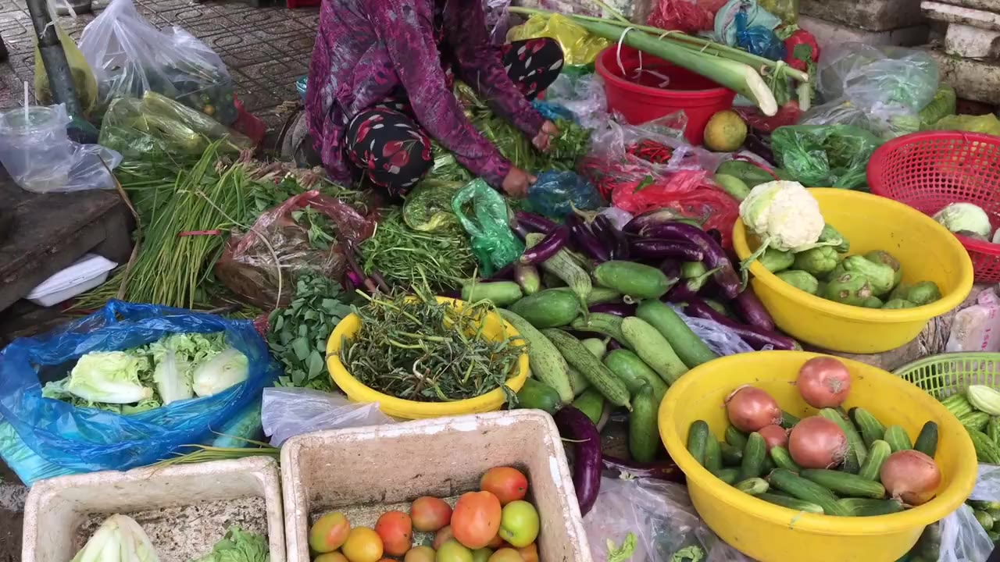

03 / PLAN THE EVERYDAY RECORDED SCENE
BAZARTULONA / THE EVERYDAY MARKET
Fresh choices.
Clearer costs.
A good basket starts with a thoughtful comparison. Explore the same products, quantities and units.
Build a sample basketDEMO ONLY — fictional market prices. Not current prices or shopping recommendations.
Explore the sample basket breakdown and question guide →
আপনার বাজারের তালিকা · Your basket
Quantities use the stated unit. Both markets compare the same grade and retail basis.
Official market information
For published market reports, visit the Department of Agricultural Marketing. This demo does not fetch or reproduce those reports.